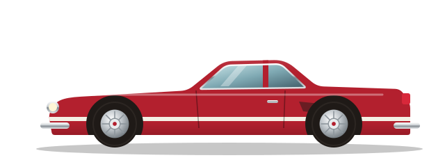
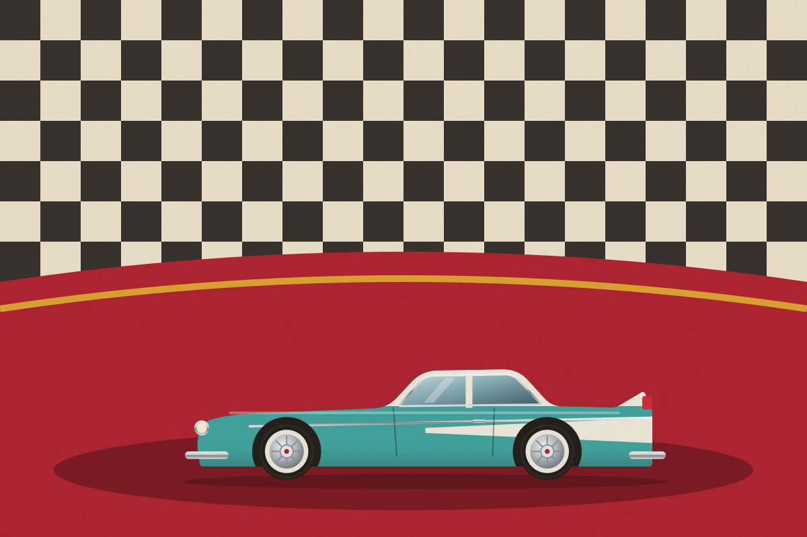

Головна / Колекція
Колекція
Десять автомобілів — від радянських легенд у моєму гаражі до світових ікон у масштабі 1:18 і списку мрій. Натисніть на картку, щоб побачити характеристики та історію.

Статуси
Що означають позначки на картках
У гаражі
Машина зареєстрована, на ходу й регулярно виїжджає на ретро-фестивалі та фотосесії.
На реставрації
Автомобіль розібраний або в процесі складання. Хід робіт я описую на сторінці «Реставрація».
Модель 1:18 / 1:43
Масштабна копія на полиці. Деякі моделі я перефарбовую вручну, щоб відтворити рідкісні кольори.
Мрія
Автомобіль, на який я відкладаю гроші й знання. Колись він обов'язково з'явиться в гаражі.
